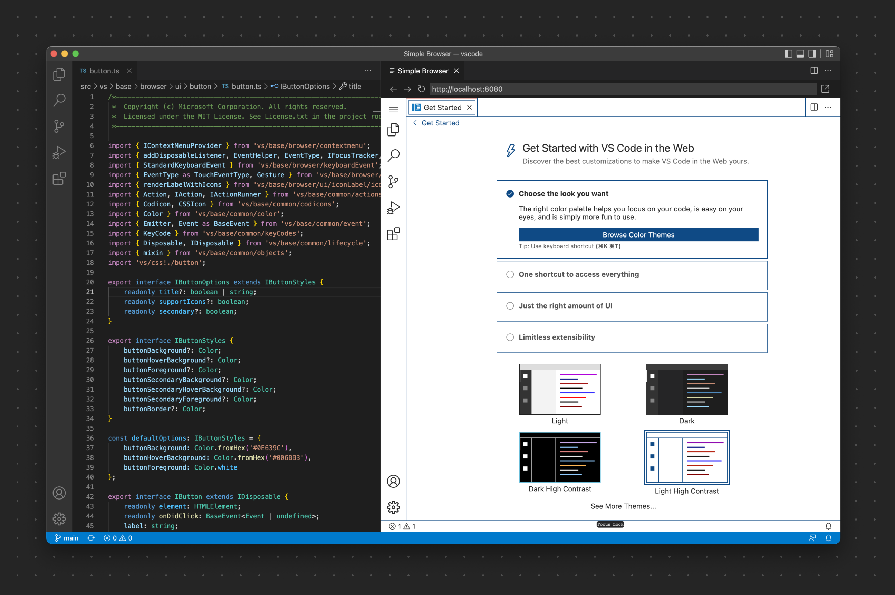
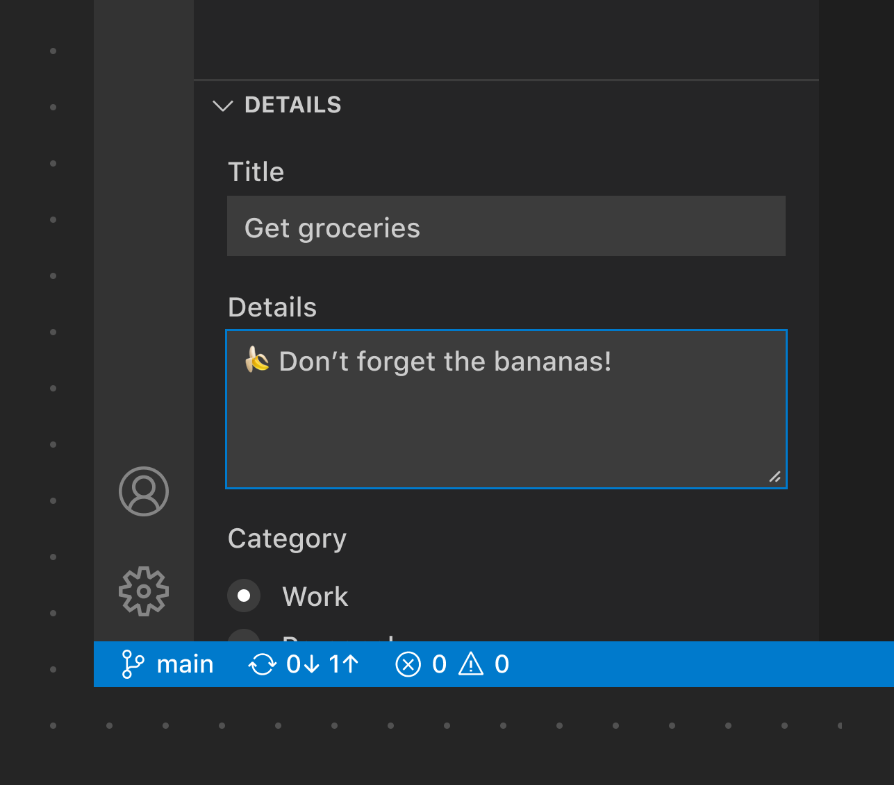

Webviews
If you need to display custom functionality that is beyond what the VS Code API supports, you can use webviews, which are fully customizable. It's important to understand that webviews should only be used if you absolutely need them.
✔️ Do
- Only use webviews when absolutely necessary
- Activate your extension only when contextually appropriate
- Open webviews only for the active window
- Ensure all elements in the view are themeable (see the webview-view-sample and color tokens documentation)
- Ensure your views follow accessibility guidance (color contrast, ARIA labels, keyboard navigation)
- Use the Webview UI Toolkit for Visual Studio Code to align your extension with VS Code's styling, theme, behavior, and accessibility characteristics.
- Use command actions in the toolbar and in the view
❌ Don't
- Use for promotions (upgrades, sponsors, etc.)
- Use for wizards
- Open on every window
- Open on extension updates (ask via a Notification instead)
- Add functionality that is unrelated to the editor or workspace
- Repeat existing functionality (Welcome page, Settings, configuration, etc.)
Webview examples
Simple Browser
This extension opens a browser preview for the editor to the side.

This example shows VS Code Web being developed right inside VS Code. A Webview panel is used to render a browser-like window.
Pull Request
This extension shows pull requests for the repository of the workspace in a custom tree view and then uses a webview for a detail view of the pull request.

Webview views
You can also place webviews into any view container (sidebar or panel) and these elements are called webview views. The same webview guidance applies to webview views.

This webview view shows content for creating a pull request that uses dropdowns, inputs, and buttons.